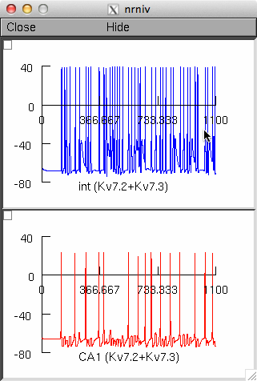
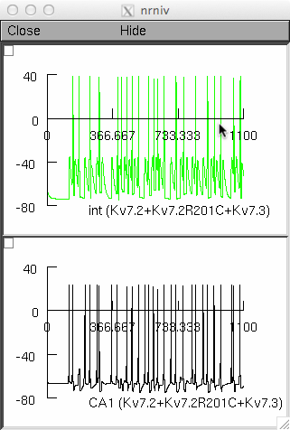

Model files from the paper "Early-Onset Epileptic Encephalopathy
Caused by Gain-of-Function Mutations in the Voltage Sensor of Kv7.2
and Kv7.3 Potassium Channel Subunits" by Francesco Miceli, Maria
Virginia Soldovieri, Paolo Ambrosino, Michela De Maria, Michele
Migliore, Rosanna Migliore, and Maurizio Taglialatela J Neurosci. 2015
Mar 4;35(9):3782-93. doi: 10.1523/JNEUROSCI.4423-14.2015.
The file fig7C.hoc reproduces the simulations shown in Fig.7C of the
paper.
Autolaunch from ModelDB or after you download and extract this
archive, compile the mod files (nrnivmodl (linux/unix), mknrndll
(mswin or mac os x), and start with n"nrngui mosinit.hoc" (linux) or
double clicking mosinit.hoc (mswin), or dragging and dropping the
mosinit.hoc file on the nrngi icon (mswin). Once the simulation has
started to reproduce Fig. 7c click run (for the default setting
("Kv7.2+Kv7.3") and you should see graphs like:

Switch over to the other choice of "Kv7.2+Kv7.2R201C+Kv7.3" and you
should see this graph:

Questions on how to use this model should be directed to
rosanna.migliore@cnr.it